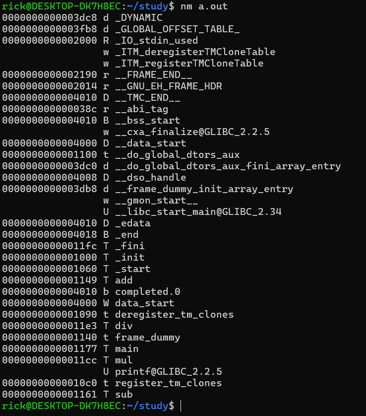
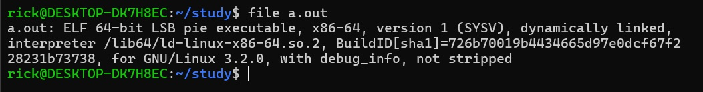
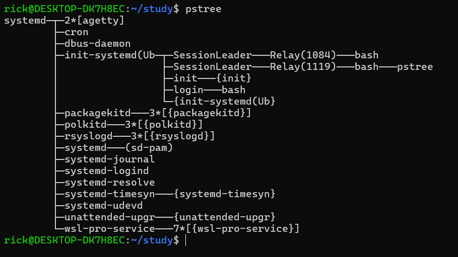
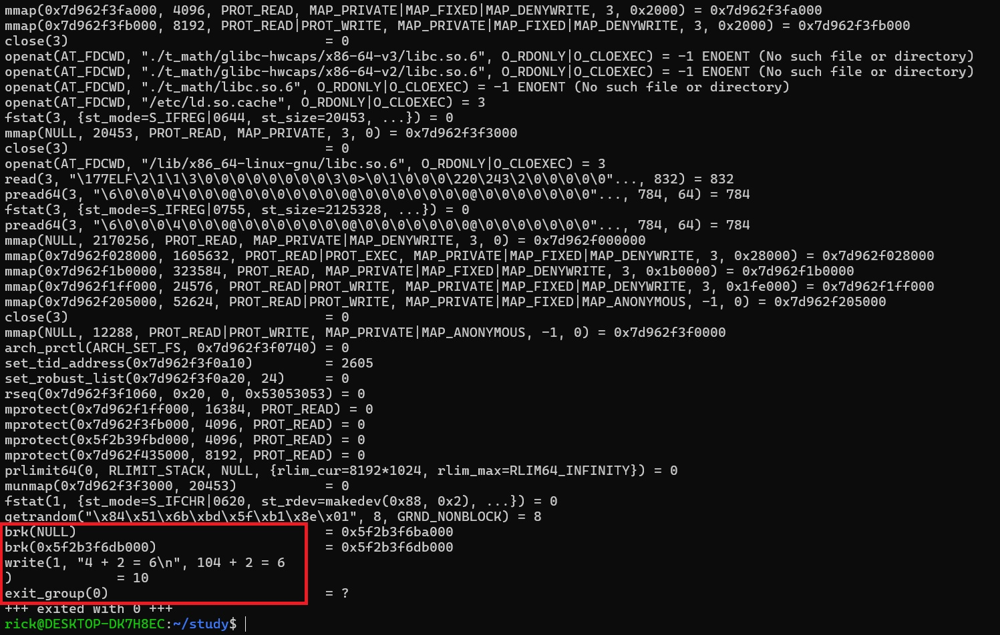

==注意：进程中自定义变量和环境变量的概念==
静态库制作
==使用静态库进行链接编译，只会把用到的函数所在的 .o 文件进行加载编译==
gcc -c *.c
ar -r libpmath.a *.o
# 可查看静态库中的文件
ar -t libpmath.a
动态库制作
gcc -c -fPIC *.c
gcc -shared -o libpmath.so *.o
编译相关
# 指定头文件路径和库路径
gcc main.c -Ip_math -Lp_math -lpmath
# 查看预编译输出信息
gcc -E main.c -o main.i -v
# 将预处理后的文件编译为汇编文件
gcc -S main.i -o main.s
# 将汇编文件编译为目标文件(机器码)
gcc -c main.s -o main.o
# 链接为可执行文件
gcc main.o
# 动态库查找路径
LD_LIBRARY_PATH
gdb 调试
# 生成带有调试信息的可执行文件
gcc -c -ggdb # 或 -g
# 启动调试
gdb a.out
# 查看代码列表
l
# 设置断点
b 行号
# 运行调试
r
# step in 逐行调试
s
# 逐过程调试
n
# 继续
c
# 退出
q
打印程序执行后的返回值
echo $?
Unix 基础知识
-
man
查询手册# 查询 man 手册的不同章节 man man # 不指定章节号，默认从命令章节开始查询 man printf man 3 printf man 3 dlopen -
ldd
ldd a.out==查看可执行文件的动态链接库==
-
nm
nm a.out==下图为直接编译.o文件的结果==
 -
file
file a.out
 -
pstree
查看系统进程树
 -
dl
动态加载 ==注意与自动加载的区别==如果使用了相关函数，在编译时需要链接 ==dl== 库文件
gcc -ldl# 打开动态库 dlopen() # 关闭，只是动态库的引用计数减一 dlclose() # 查看错误，注意，只能查看最近的一次 ==dlopen== 中出现的错误 dlerror() # 在加载的动态库中查找符号 dlsym()#include <stdio.h> #include <dlfcn.h> typedef int (*fun_t)(int,int); int main(int argc, char* argv[]){ // 加载动态库文件 void* handle = dlopen(argv[1], RTLD_NOW); if(handle == NULL){ printf("load failed:%s\n", dlerror()); return -1; } printf("load success!\n"); // 根据函数名查询函数地址 fun_t f = (fun_t)dlsym(handle, "add"); if(f == NULL){ printf("dlsym error: %s\n", dlerror()); return -1; } printf("3 + 5 = %d\n", f(3, 5)); dlclose(handle); return 0; } -
strace
查看系统调用
strace ./a.out
 -
getpid
获取当前进程的 PID#include <stdio.h> #include <unistd.h> int main(){ printf("pid = %d", getpid()); getchar(); return 0; } -
errno错误号和错误信息t_stdio.h文件#ifndef T_STDIO_H #define T_STDIO_H #include <stdio.h> #define E_MSG(MESSAGE,VAL) do{perror(MESSAGE);return (VAL);}while(0) #endif#include "t_stdio.h" // #include <errno.h> // #include <string.h> int main(int argc, char* argv[]){ FILE* f = fopen(argv[1], "r"); #if 0 if(f == NULL){ // errno=-1; // 根据 errno 获取错误信息 printf("fopen failed...%d\n", errno); printf("fopen failed...%s\n", strerror(errno)); // 直接打印错误信息 perror("fopen"); return -1; } #endif if(f==NULL) // 对代码简单的宏定义封装 E_MSG("fopen",-1); printf("fopen success...\n"); fclose(f); return 0; }
内存管理
CPU
控制器
ALU运算器
寄存器
缓存
MMU内存管理单元
== 实模式：CPU 直接操作物理内存 ==

== 保护模式：通过操作系统管理内存（虚拟地址空间）==


GDT 表与 LDT 表
== GDT 表所有运行的进程都可见，属于操作系统的段 ==
== LDT 表每个进程所独有==
proc 文件
vim /proc/$$/maps
5868b6ea0000-5868b6f8f000：地址范围r-xp：访问权限00030000：库内偏移地址08:30：映射文件设备号（主设备号:次设备号）1448：映射文件 i 节点号/usr/bin/bash: 库路径

r-xp: 可读可执行的，可以理解为 ==代码段==
r–p: 可读的的，可理解为 ==只读数据段==
rw-p: 可读可写的，可理解为 ==可写数据段==
s/p: 共享/私有
heap: 堆
stack: 栈
进程映射


段的形成
a.out汇编

- 链接过程合并目标文件中的段

栈段和栈帧

文件管理
文件描述符
文件描述符（数组下标）始终是当前最小的未使用的下标


文件权限
注意：umask 的影响
常用函数
open()
close()
read()
write()
#include "t_stdio.h"
#include <fcntl.h>
#include <unistd.h>
#include <string.h>
int cp_file(int s_fd, int d_fd){
int total = 0;
int r, w;
char buf[128];
while((r = read(s_fd, buf, 128)) > 0){
char* tmp = buf;
while(r > 0){
w = write(d_fd, tmp, r);
r = r - w;
tmp += w;
total += w;
}
}
return total;
}
int main(int argc, char* argv[]){
char msg[256] = "";
//打开源文件，以只读的方式打开
int src_fd = open(argv[1], O_RDONLY);
if(src_fd == -1){
sprintf(msg, "open %s failed", argv[1]);
E_MSG(msg, -1);
}
//打开目标文件，以写的方式打开
//如果文件不存在，则创建文件，指定文件权限为 0644
//如果文件存在，将文件内容清空
int flags = O_WRONLY | O_CREAT | O_TRUNC;
int mod = 0644;
int dst_fd = open(argv[2],flags, mod);
// 将源文件的内容拷贝到目标文件中
cp_file(src_fd, dst_fd);
close(src_fd);
close(dst_fd);
return 0;
}
文件描述符重定向
t_file.h
#ifndef T_FILE_H
#define T_FILE_H
#include <unistd.h>
#include <fcntl.h>
#endif
#include "t_stdio.h"
#include "t_file.h"
#include <string.h>
int main(int argc, char* argv[]){
// 0 1 2
// std_in std_out std_err
char* msg = "this is rick from beijing...\n";
// 打开要重定向到的文件描述符
int flags = O_WRONLY | O_CREAT | O_TRUNC;
int fd = open(argv[1], flags, 0644);
if(fd == -1)
E_MSG("open", -1);
// 备份原来的标准输出文件描述符
int s_fd = dup(1);
// 将要重定向到的文件描述符拷贝到标准输出的文件描述符
dup2(fd, 1);
close(fd);
// 输出到标准输出文件描述符
write(1, msg, strlen(msg)); // 输出到重定向的文件，不会输出到屏幕
// 恢复原来的标准输出
dup2(s_fd, 1);
close(s_fd);
write(1, msg, strlen(msg)); // 输出到屏幕
return 0;
}
内存映射
mmapmunmap

#include "t_stdio.h"
#include <sys/mman.h>
#include <string.h>
int main(void){
// 目标：将物理地址映射到进程的虚拟地址空间
// 如果不映射物理地址，则该虚拟地址空间的指针为野指针
// 野指针是不可使用的
int mapLen = 1024;
int port = PROT_READ | PROT_WRITE;
int flags = MAP_PRIVATE | MAP_ANONYMOUS;
void* p = mmap(NULL, mapLen, port, flags, -1, 0);
if(p == MAP_FAILED)
E_MSG("mmap", -1);
// 对映射的内存进行操作
strcpy(p, "hi, this is rick...\n");
printf("%s", (char*)p);
// 解除映射
munmap(p, mapLen);
return 0;
}